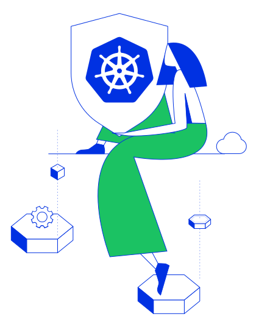
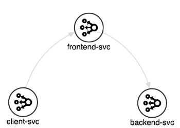

In this tutorial we will learn about Alcide Embedded Firewall Policies.
Alcide Embedded Firewall Policies basically enable developers & devops to capture their microservice know-how into a set of firewall rules that creates a whitelisted perimeter at the Pod level.
The policy embedding, comes in the shape and form of annotating Pod Specification within a deployed resource.
So whether this a plain Kubernetes YAML resource, a helm chart, we can capture security policy as code.

Alcide Embedded Policies are created by developers/devops either in Git or as part of an automation pipeline to control the "Allowed" network traffic for the application/micro-service.
By using Alcide Embedded Policies, new applications are immediately granted with the required access to operate, and only what's required.
For this tutorial you will need a Kubernetes cluster with enough permissions to deploy resources into it.
- Install and Set Up kubectl.
- Install Minikube, or any working Kubernetes Cluster
- Alcide Cloud Account

In order to implement Alcide Runtime Security features, we will need to onboard your Kubernetes cluster into your Alcide Cloud Account
- Login to your account: https://yourcompany.cloud.alcide.io
- On the left hand side menu, click on Create Data Center/Cluster
- Follow the steps in the UI wizard.
At this point you should be able to see your cluster, worker nodes, and workloads, in the Infrastructure View and the application components in your Application View

Policy Structure
Let's begin with few Alcide Embedded Policy examples before we see the syntax definiton:
policy.alcide.io/inbound0: tcp://10.0.2.14:80
policy.alcide.io/inbound1: service://somenamespace.someservice
policy.alcide.io/outbound0: service://kafka
policy.alcide.io/outbound1: https://hosted.db.service.cloudprovider.com
The formal syntax of Alcide Embedded Policy is composed of one or more policy rules:
policy.alcide.io/<Traffic direction><Rule number> <Rule>
- traffic direction set traffic direction, inbound or outbound.
- rule number defines the matching rule number. Matching order is ordered and sequential, i.e. rule1 will be matched before rule2, etc.
- rule describes the rule behavior
Rule Types
A rule could be based on an IP, DNS or a service. To define the rule type, edit the rule type section of your policy.
IP/DNS Rule Types
A rule on IP or DNS is defined in the following structure:
protocol://IP|DNS|any:port|any
- protocol Use L3/L4 standard protocol names (icmp, udp, tcp, ssh, ftp), the default service port will be used unless specified otherwise. For L4 protocols (ssh, ftp, ...), TCP is assumed unless otherwise specified (udp, icmp, sctp).
- IP Only IPv4 are supported. Specifiying port is manadatory.
- DNS DNS rules can only be specified for Outbound rules. A DNS address can be in the form of FQDN or as a prefix wildcard (for example: all FQDNs that end with amazon.com will look like ‘*.amazon.com').
- port You can define up a valid port number or you can use "any" to allow access on any IP and/or port for the specified protocol.
Service Rule Type
A rule on a service is defined in the following structure: service://[namespace.]service|any
namespace If not specified, any namespace will be matched.
service The service on which the rule is based on. The default service port will be taken if not specified otherwiseUse "any" to allow access on any service.
There is no service in IP/DNS rule.
I suggest to split the explanation about L3 & L4 protocols.
With L3 protocol, port is mandatory!
With L4 protocol, port is optional. You can only specify the default port OR any. You'll not be able to specify any other specific port.
IP/DNS Rules Examples
DNS Rules Examples (valid only on outbound rules)
Service Rules Examples
Create the frontend, backend, and client apps:
kubectl create -f https://raw.githubusercontent.com/alcideio/codelab/master/docs/codelabs/runtime-codelab-03/alcide-demo_namespace.yaml
kubectl create -f https://raw.githubusercontent.com/alcideio/codelab/master/docs/codelabs/runtime-codelab-03/star_demo.yaml
- Go to your account at Alcide Cloud Console, and navigate to the Application view,
- In the upper left side you could see a DropDown menu for filltering clusters and namespaces, default is "All Clusters"
- Oppen the DropDown menu and under your cluster name sellect alcide-demo to filter by this namespace.
- You should see now the 3 new services we just created, each service has full communication access to his neighbors (indicated by the arrows).
We are going to switch Alcide's Agent running mode - enforcement mode.
kubectl set env daemonsets/agent-nodelet -n alcide ALCIDE_WORKLOAD_ENFORCE_MODE=inline && kubectl rollout status -n alcide daemonset/agent-nodelet --watch && while [[ ! $(kubectl -n alcide exec -it $(kubectl get pods -n alcide -l app=agent-nodelet -o custom-columns=:metadata.name --no-headers) -- alcide_agent dp wl ls | grep $(kubectl get pods -n alcide-demo -l app=client -o custom-columns=:metadata.name --no-headers)) ]]; do echo "please wait for Alcide agent to be reaady..."; sleep 20; done; echo "Ready! :)"
Now let's create the same workload but this time with Alcide Embedded Firewall Policies:
kubectl create -f https://raw.githubusercontent.com/alcideio/codelab/master/docs/codelabs/runtime-codelab-03/star_demo_with_embedded_policies.yaml
- Go to your account at Alcide Cloud Console, and navigate to the Application view,
- In the upper left side you could see a DropDown menu for filltering clusters and namespaces, default is "All Clusters"
- Oppen the DropDown menu and under your cluster name sellect alcide-demo to filter by this namespace.
- You should see now the 3 new services we just created but this time each service can communicate only with allowed neighbors.

Reset the environment
Delete the alcide-demo Deployment from the previous step and re-deploy it.
kubectl delete -f https://raw.githubusercontent.com/alcideio/codelab/master/docs/codelabs/runtime-codelab-03/star_demo_with_embedded_policies.yaml
kubectl delete -f https://raw.githubusercontent.com/alcideio/codelab/master/docs/codelabs/runtime-codelab-03/star_demo.yaml
kubectl delete -f https://raw.githubusercontent.com/alcideio/codelab/master/docs/codelabs/runtime-codelab-03/alcide-demo_namespace.yaml
In this codelab we covered:
- Alcide Embedded Policy syntax
- Implemented Alcide Embedded Policy